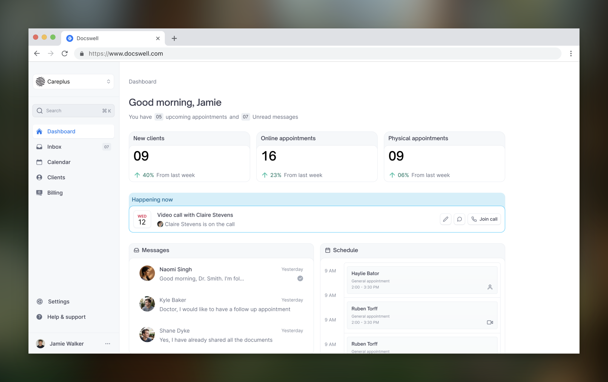
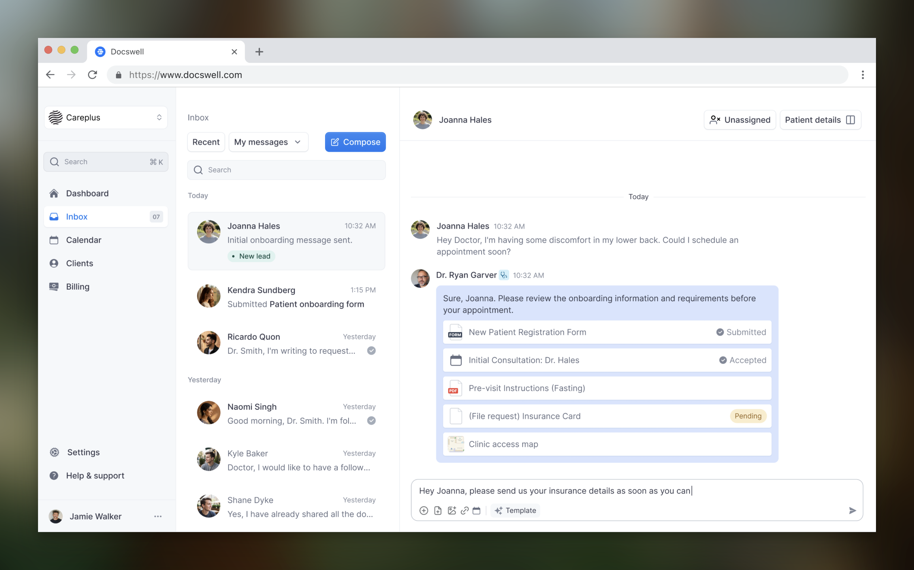
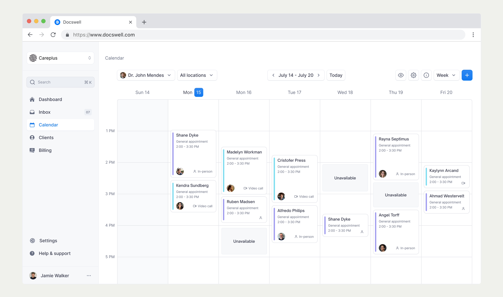
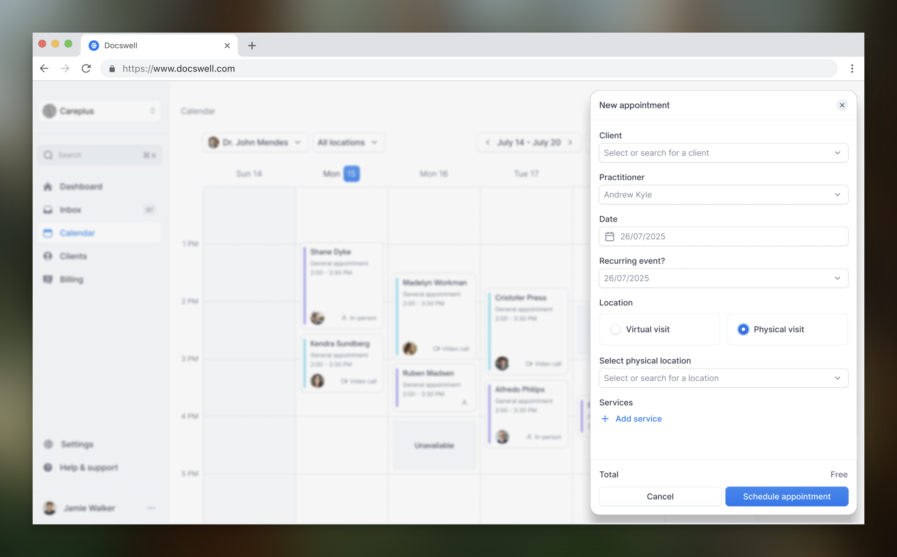
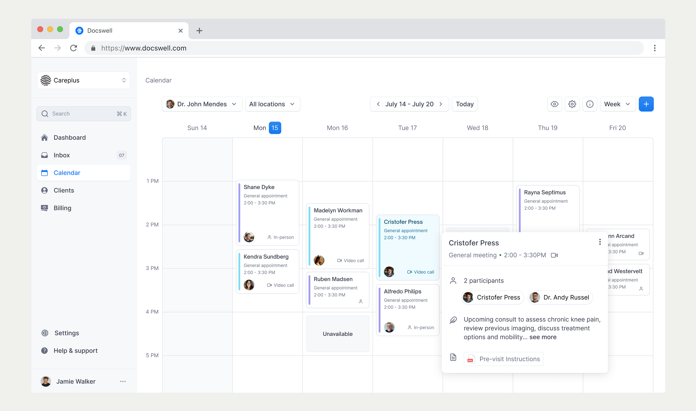
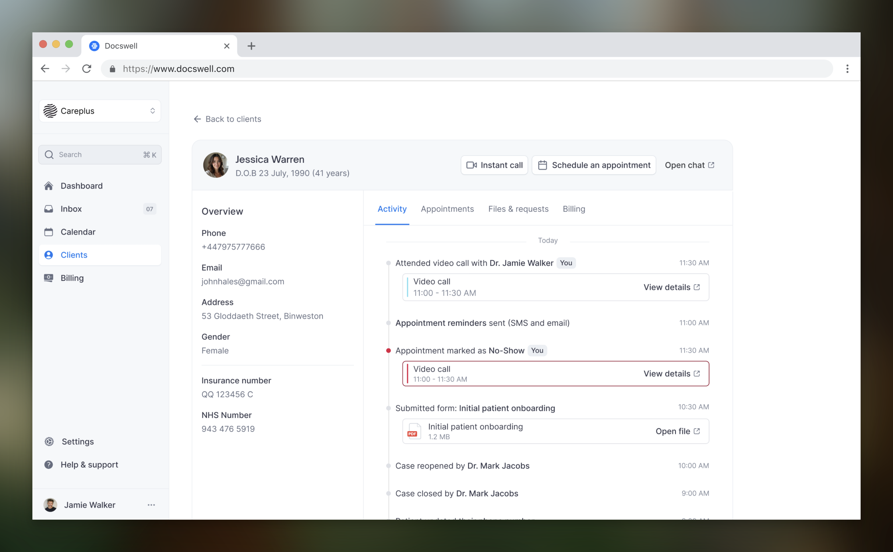
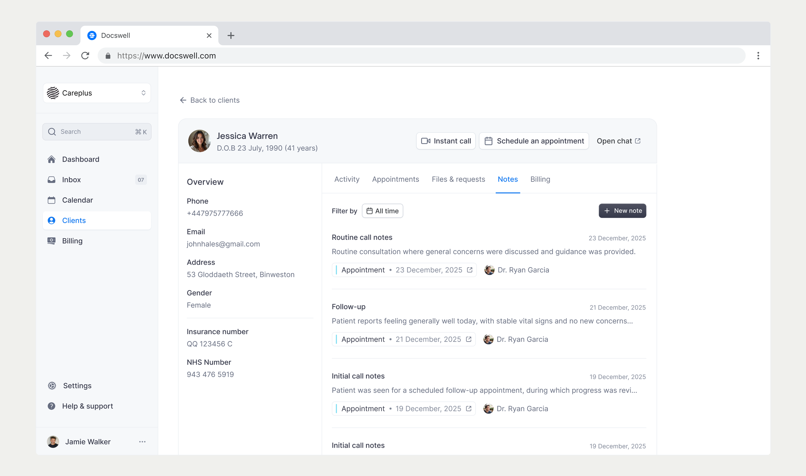
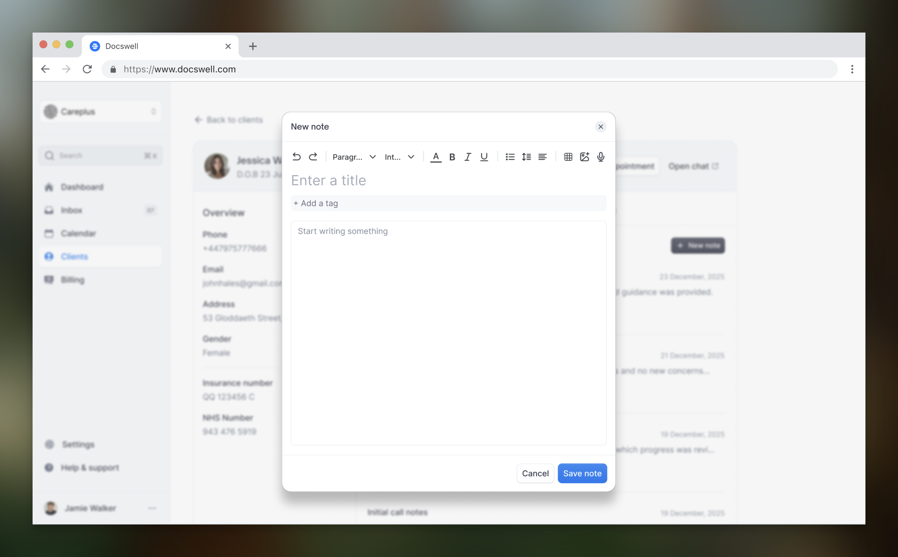
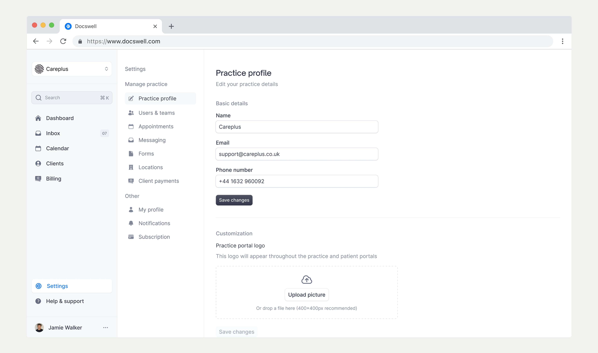

Leading design at Docswell to help them go from MVP to public launch
Docswell is a UK-based medtech company that helps medical practices completely digitise their workflow.

Background
At the time, UK medical practitioners relied on multiple disconnected tools for appointments, records, and communication, creating time-consuming workflows that pulled focus away from patient care.
When I joined, there was already an early MVP, but as the company shifted its focus to therapist-led practices, I redesigned both the practitioner and patient portals to better support new needs and prepare the platform for its first public release.
Role
I was the sole designer on the team and wore multiple hats. I led user research, design system, and end-to-end UI design. I also played a pivotal role in product decisions while collaborating closely with the Founder and COO.
Outcome
- Redesigned practice and client portals, to streamline complex clinical workflows, resulting in a 28% reduction in task completion time for practitioners.
- Conducted user interviews with clinicians to validate workflows and surface real-world pain points, identifying 3 critical usability issues that prioritised the MVP backlog.
- Created a scalable design system to ensure consistency across patient-facing and internal tools, reducing design-to-development cycle time by 3 days per feature.
- Collaborated with the co-founders and engineering team using Linear and continuous design handoff practices to accelerate MVP development, going from concept to MVP launch in 4 months.
- Designed a mobile-responsive, customer-facing portal, reducing support tickets related to mobile access by 20%.
Product Highlights
Inbox The Inbox helps manage all patient interactions, including assigning patients, messaging, and appointment management. This reduced tool switching, streamlined day-to-day workflows, and enabled faster responses to patients.

Calendar A centralised calendar to manage all appointments and practitioner schedules across the practice.



Patient profile A comprehensive profile section for the patient inludes all details related to them that will help the practitioner in aiding him easily.



Settings The settings experience was restructured into a clear, well-organised system, making complex practice configuration easier to understand and manage.
